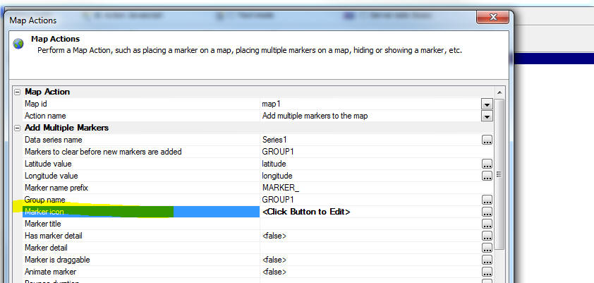
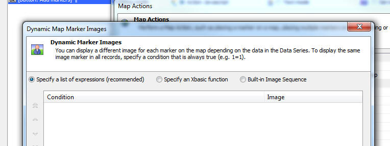
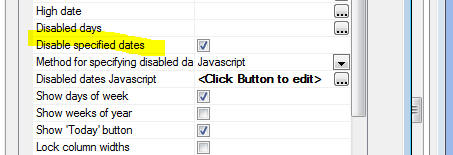

This is a list of release notes for Alpha Anywhere 4.01 to verify/move into the help system. The following directories are associated with this file: "Alpha_4.3.2_ReleaseNotes_files"
As this content is moved into the help system, please delete it from this file.
Guidelines:
| UX Component - Map Control | Adding Multiple Markers to a Map - Customizing the Marker Icon for Each Marker |
Using Action Javascript, it is easy to add
multiple marker to a map control on the UX.
However, in some cases you might want to use a
different icon for each marker. In many cases
the decision as to what icon to use for a
particular marker should be based on some data
about the marker. In this video we show how the marker icons used for markers on a map can be dynamically specified. Watch Video - Part 1 Watch Video - Part 2 Watch Video - Part 3 Date added: 2016-04-15 |
UX Component - Map Control - Action Javascript - Adding multiple markers to a map - Customizing the marker icons - When you add multiple markers to a map you can now dynamically set the icon used for each marker based on data in the Data Series for each marker. You can also use image sequences.
Watch Video - Part 1
Watch Video - Part 2
Watch Video - Part 3
To customize the marker icons, click the smart field for the Marker icon property, shown below.

This will bring up a dialog that offers three different methods for specifying the marker icons:

UX Component - Calendar Control and Date Picker - Disabled Days - When configuring the Calendar control or the Date Picker you can now explicitly disable certain dates.

You can either explicitly specify certain dates to disable (or call a Javascript function that returns an array of explicit date values), or you can specify more general Javascript code that gets called before each date value is drawn to determine if the date is disabled or not. For example to disable every December 25th date (regardless of year), you could specify the following Javascript:
Note: The Javascript is referencing a variable called 'd' -- the date value of the entry being rendered.
if(d.getMonth() == 11 && d.getDate() == 25) return true; //month is 0 based
return false;
You can also set the disabled dates programmatically (using Javascript) after the calendar has been rendered. For example:
//create an array of disabled dates
var disabledDates = [];
disabledDates.push('12/25/2016');
disabledDates.push('12/26/2016');
//get a pointer to the calendar control
var obj = {dialog.object}.getControl('MYCALENDAR1');
//set the calendar's disabledDates.dates property
obj.datePicker.disabledDates.dates = disabledDates;
//refresh the control
obj.refresh();
AlphaDAO - MySQL - Commands out of sync Error
- If you executed code that returned a resultset from MySQL, but did
not read all of the rows in the resultset before executing a new SQL
command you would get a 'Commands out of sync' error from MySQL.
This is now fixed.
AlphaDAO - SQL::Resultset - .NextResult() Method -- Under some circumstances, when there was no next result set, would return an Xbasic error, rather than .f..
AlphaDAO - Oracle - CLOB Fields - Fixed an issue with Oracle CLOB fields if the data in the field contained high order characters.
UX Component - List Control - Search Part - Keyword Searches - Keyword searches now honor the search type setting for individual character fields. This means that if you had set the search type for a field to (say) '12' -- a case in-sensitive 'contains' search -- and you preformed a keyword search that included this field, the field search would be performed using search type of '12'.
Grid Component - Row Expander and Linked Content Section - Fixed an issue if the child component was a UX or Custom Component.
Grid Component - Excel Import - Under some circumstances empty data in the Excel file did not import correctly.
Forms - Desktop Applications - Button Labels - A bug was introduced in the previous build the caused button labels on forms to not display correctly if the button text included the & character.
Application Server - Session Variables - Null Values -- A bug was introduced in the previous build that prevented a session variable from being set to a null value if it had previously been set to a non-null value.
UX Component - Default Value - Page Variables - If you set the default value of a variable to an expression that used the PageVariable prefix, the expression did not evaluate. For example:
=PageVariable.var1
This bug was introduced in build 3522-4647. However, an easy work around is to change the default value expression to:
=request.variables.var1